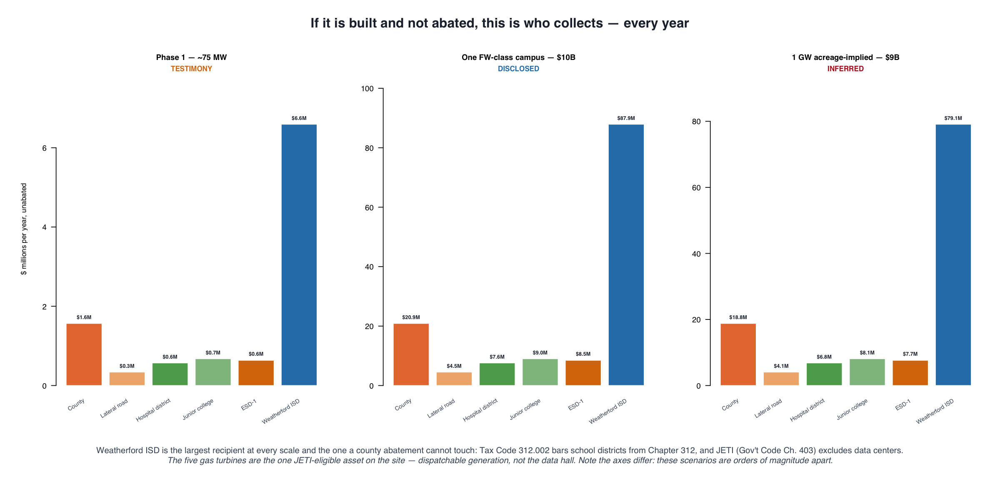
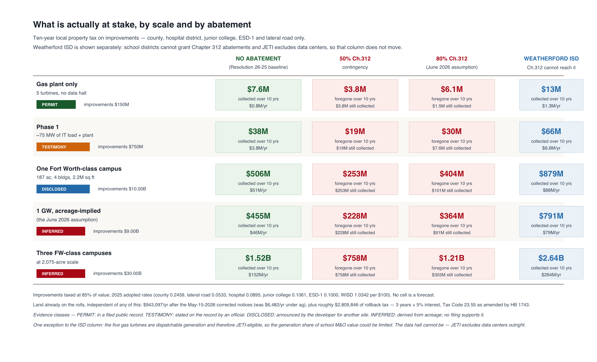
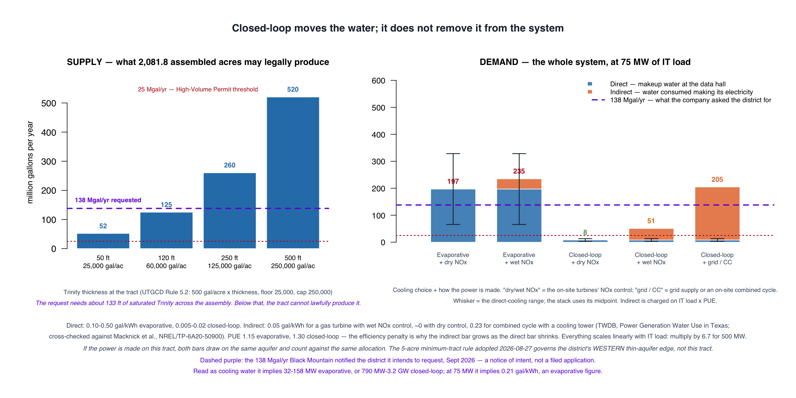

Black Mountain Power LLC
and what it will cost Parker County
A data-center and gas-plant complex at FM 730 and Pearson Ranch Road — what we know, what it will cost, and what this court can do.
Prepared for the Parker County Commissioners Court · standalone data-center session, June 9, 2026
Revised September 1, 2026
Cost, water, Chapter 391, mitigation and the ask rebuilt. The June briefing is preserved unchanged at archive/2026-06.
Every number in this briefing traces to a public record. Sources are listed in each section and gathered in
Sources & methodology.
Interactive map and full data:
github.com/Parker-Data-Pro-Populo/data-center-surface-datarun
Community opposition to the establishment of data centers in Parker County shouldn’t be dismissed as uninformed ‘NIMBY-ism.’ Because we choose to stand against them isn’t a rejection of data centers, but of process and impact — something is being imposed on the community that will directly compete with us for resources necessary for our survival, such as water and clean air. To have that imposition occur when we do not have a seat at the table — when monied interests and property rights are given a seat, but the citizens and human rights are checked at the door — is simply not acceptable.
It is possible that, when all the financial and environmental concerns are addressed and there is evidence of adherence to a plan that protects the citizens and the environment of Parker County, data centers will simply be a part of the landscape. But if the process is open and inclusive, we not only have built-in protections for our community, we have built a collaborative effort across the county, focused on the common good. This is a habit we must continue, because this will not be the last challenge our community will face.
The appraisal district just recognized the conversion
Parker County Appraisal District, May 15, 2026
On May 15 the appraisal district stripped the agricultural exemption from all 18 parcels at 501 Pearson Ranch Road. In plain terms: the county now officially treats this land as an industrial site, not a ranch — because that is what it is becoming.
The CAD issued corrected notices on all 18 parcels owned by Black Mountain Power LLC at 501 Pearson Ranch Road.
The notices removed the agricultural exemption. The parcels are no longer being valued as ranchland, because they are no longer being used as ranchland.
This is the appraisal district officially recognizing that the conversion has begun.
Source: Parker CAD May-15-2026 corrected notices. See Sources & methodology.
About 2,081 acres, just outside the city's reach
501 Pearson Ranch Road, off FM 730 (Azle Highway)
The site was deliberately pulled out of Weatherford's jurisdiction and sits on top of the city's drinking-water watershed — so the people most affected have the least say over it.
- 18 parcels · 2,075.28 acres under the May 15, 2026 corrected notices, assembled under Black Mountain Power LLC — plus a 19th adjacent parcel of 6.53 acres from the same seller that received no notice, for an assembly of about 2,081 acres
- Taxing units: Weatherford ISD, Parker County, Hospital District, Junior College District, ESD-1, Lateral Road
- Removed from Weatherford's ETJ — petitioned out, so the city has no land-use authority
- Inside the Lake Weatherford watershed — the city's drinking-water source
- ~2 miles from the northern City of Willow Park boundary
- ~1 mile from a proposed $1.5 billion equine development the city has been planning for four years
Land value
Earlier transactions
2025–2026: further parcels assembled under the same operator
2026-05-15: ag exemption stripped from all 18 parcels
Sources: Parker CAD · pg01.parker_property · Weatherford City Manager testimony, May 26, 2026.
One operator, multiple LLCs, one office
And a documented trail of political giving alongside a 2.5-week permit
The same person controls every entity involved — a land company that holds the dirt and a power company that holds the air permits — all run out of a single Fort Worth office. Six months before the permit cleared in 2.5 weeks, that company gave the Governor's campaign half a million dollars.
Rhett M. Bennett is the registered agent for every Black Mountain entity and a named member of Fort Worth Power Core LLC. All four entities operate from 425 Houston Street, Suite 400, Fort Worth, TX 76102.
The structure separates the land arm from the power arm. The land arm holds the parcels. The power arm holds the TCEQ air permits and operates the gas turbines.
| Entity | TX SOS file | Formed |
|---|---|---|
| Black Mountain Land Company LP | 0801708440 | 2012-12-28 |
| Black Mountain Royalty LP | — | (earlier) |
| Black Mountain Power LLC land arm | 0805989692 | 2025-04-11 |
| Fort Worth Power Core LLC power arm | 0805493020 | 2024-04-03 |
Registered agent for all entities: Rhett M. Bennett. Registered agent for the power-arm legal filings: Stubbeman McRae Sealy Laughlin & Browder (Midland TX, Permian Basin energy counsel).
| $500,000 | Black Mountain Power LLC → Texans for Greg Abbott | Nov 14, 2025 | TEC report #101029815 |
| $500,000 | Bennett → Texans for Greg Abbott | Mar 6, 2026 | TEC report #101055764 |
| $36,750 | Bennett → Texans for Greg Abbott | Oct 23, 2024 | TEC report #100987892 |
| $10,000 | Bennett → Sen. Phil King (SD-10, Parker County) | Sep 30, 2025 | TEC report #101026985 |
| $10,000 | Bennett → Sen. Phil King | Sep 26, 2024 | TEC report #100970637 |
| $46,000 | Bennett → eight Fort Worth council members and the Mayor | 2025 | during zoning approvals |
What we are not claiming. Nothing here shows that any contribution bought any decision, and we have no evidence of one. Note also what cuts against that reading: on August 3, 2026 the same Governor froze data-center interconnections statewide pending an audit. These are filings, dates and amounts — the public record of who is spending what, and nothing more.
A name note, so the arithmetic can be checked. The CEO appears in TEC filings as both "Rhett Bennett" and "John Bennett," each at Fort Worth addresses with Black Mountain employers and Founder/CEO or Chairman occupations. A 2018 filing under the full name John Rhett Miles Bennett (Black Mountain Oil & Gas, CEO) ties the two forms together. Totals combine them; every line above remains separately citable.
Sources: TX Comptroller franchise-tax registry · TCEQ Central Registry · Texas Ethics Commission Report #101029815 · Texas Tribune (Jan 15, 2026) · Fort Worth Report. See Sources & methodology.
Parker is one site in a statewide rollout
Fort Worth Power Core LLC · 14 sites · ~5,800 MW · 26 months · one address
This isn't a one-off local project. The same operator has registered 14 gas plants across Texas in just over two years. Four are tied to data centers; the other ten are registered as merchant grid generation, not tied to a specific data center. Parker drew the developer's attention as the Fort Worth campus ran into resistance.

Powering the $10B Black Mountain campus, SE Fort Worth
Parker County ×1 — 75 MW
"Backup/bridge power for a new data center" (TCEQ permit language)
Hale · Jack · Somervell · Wheeler · Williamson
Selling wholesale power to ERCOT — not tied to a specific data center
↗ Open the interactive map — toggle the "Fort Worth Power Core network" layer.
Tarrant permits filed. $10B Fort Worth campus planned.
$46K to FW City Council. $500K to Abbott (Nov). $10K to Sen. Phil King (Sep).
"Resources & land use concerns" — campus stalled.
A second $500K to Abbott (Mar). $10K to Rep. Ken King (Jan), $10K more (Jun).
Rural. No recorded local contributions. 2.5-week registration. (Fort Worth approved the 187-acre site plan 7–4 on Aug 25, 2026.)
Sources: TCEQ Central Registry CN606278281 · TCEQ turbine permit database · GEM Wiki · ERCOT interconnection queue · Fort Worth Report.
A power plant approved in 2.5 weeks, with no public process
5 gas turbines · 24/7 continuous operation · capacity stated in testimony as ~75 MW, not in the permit record
Texas has a slow permit path with public hearings, and a fast path with none. This plant took the fast path — approved in two and a half weeks, with no chance for anyone to comment or object.
| TCEQ regulated entity | RN112172408 "PARKER PLANT" |
| Permit number | Air New Source Registration #179422 |
| Permit type | Standard Permit / Permit-by-Rule fast-track |
| Status | ACTIVE |
| Holder | Fort Worth Power Core LLC |
| Approval timeline | 2.5 weeks (vs ~9 months for the City of Weatherford's recent wastewater permit) |
| Public-notice process | None |
| Operating hours | Continuous (24/7) |
What "Standard Permit" means
TCEQ has two air-permit paths:
- New Source Review (NSR): full technical analysis, 30-day public notice, contested-case hearing available. Takes 6–18 months.
- Standard Permit / Permit-by-Rule: pre-approved authorization templates. Minimal or no public notice. Takes days to weeks.
The fast-track is legal. But it means the public did not have the opportunity to comment, request a contested-case hearing, or examine the emissions inventory.
Sources: TCEQ Central Registry · May-26-2026 commissioners court transcript.
Phase 1: five turbines, and a number that is not in the permit
Corrected September 2026 — the county has since refused abatements, and the scale was never filed
TCEQ Air New Source Registration 179422 (RN112172408, "Parker Plant," 501 Pearson Ranch Road) authorizes five natural-gas turbines described as backup and bridge power for a data center. That is the permitted fact. The 75-megawatt figure attached to it — including by this site in June — comes from testimony, not from the permit: it was stated in open court on May 26, 2026 that "there has been [a] 75 megawatt power plant that's been approved for this particular site… approved for continuous operations, which means it can run 24 hours a day."
We went looking for the filed number and did not find one. TCEQ's Central Registry entry for Registration 179422 shows status, holder and address — no capacity — and the agency's Central File Room returns no public documents for it. The registration's terms require a records request to TCEQ Air Permitting. Until that comes back, this row stays labelled TESTIMONY.
That cuts both ways, and it is why we no longer treat 75 MW as a ceiling. These registrations do state capacity; this operator's other one states a number nearly six times larger. What Parker's says is a question with an answer on file somewhere — it simply has not been published.
The turbine class is unsettled in the same way. Our own June working file describes the registration as five Siemens SGT-400 units at 15 MW each — which is where 75 MW comes from — but that description carries no citation and we have not been able to confirm it. Meanwhile three of this operator's Tarrant County registrations are named for a larger machine, the SGT-800, rated roughly 45 to 62 MW. Five of those would be 250 MW or more. We assert neither. We are pointing at the gap: the difference between 15 MW units and 50 MW units is a factor of three in every number downstream, and it is settled by one document that has not been published.

What changed: in June this section said Phase 1 would cost the county about $30 million, assuming an 80% Chapter 312 abatement. On June 30, 2026 the Commissioners Court stated on the record that Resolution 26-25 forecloses that assumption — "there will be zero tax abatements for data centers in Parker County." The baseline therefore inverts.
Plus Weatherford ISD: $6.6M/yr, $66M over ten years — and a county abatement cannot touch it. Tax Code §312.002 bars school districts from Chapter 312 entirely, and JETI (Gov't Code Ch. 403) excludes data centers by NAICS code. The one JETI-eligible asset on the site is the generation — the turbines, not the data hall.
The land is already producing. After the May 15, 2026 corrected notices, the 18 parcels pay about $943,000/yr against roughly $6,500 under the agricultural valuation, plus about $2.8 million of rollback tax — three years plus 5% interest, Tax Code §23.55 as amended by HB 1743 (2019).
Sources: TCEQ Central Registry (Reg. 179422 / RN112172408) · Commissioners Court transcripts, May 26 and June 30, 2026 · Tax Code §§312.002, 23.55 · Gov't Code Ch. 403 (JETI) · SB 6 (89R, 2025). Model: profile_2026_09/RCO_05g_scenarios.R.
Buildout: no one has filed a number, so we publish the grid instead
Two things are genuinely unknown — the scale, and whether anyone abates it. Both are axes, not assumptions.
In June this site published a single buildout figure — $364 million — derived by extrapolating a 1-gigawatt campus from the acreage and applying an 80% abatement. Neither input was ever filed with anyone. That number has not been deleted: it is the cell where "1 GW, acreage-implied" meets "80% Chapter 312" in the grid below. What has changed is that it is no longer presented as the finding. Each row carries the class of evidence its scale rests on, and the baseline column is the one the county has actually adopted.

The better anchor is the developer's own disclosure. Black Mountain's Fort Worth project is a $10 billion, 187-acre site plan — four buildings, 68 feet tall, 2.2 million square feet — that the Fort Worth City Council approved 7–4 on August 25, 2026. Scaling Parker scenarios in units of a campus the company has actually described is defensible in a way that scaling from raw acreage is not.
Against that yardstick, the June extrapolation turns out to be roughly one Fort Worth-class campus — not an outlandish figure, but an unsourced one.
What is not known is itself the finding. As of today there is no data-center permit application on file with Parker County, no disclosed capacity for the Parker site, and no announced ERCOT queue position. Weatherford has said data centers "remain NOT ALLOWED" inside the city; the site is roughly seven miles northeast of downtown, outside its reach.
The state does not have these numbers either — which is why the August 3 directive requires every project in the interconnection queue to file its incentives, power draw, water use, mitigation measures, and ownership. ERCOT is working to complete that audit by December 10, 2026. That filing, not an extrapolation, is where a defensible buildout number will come from.
What can actually claw the money back is an audit, and audits are the thin part of the system. 138 data centers are certified — 59 of them in 2026 alone, arriving at roughly ten a month — and 20 have been audited. Of those twenty, six were out of compliance: four failed the job requirement, one the square-footage floor, one self-reported a broken power agreement. A facility found non-compliant must repay the taxes it was excused. The state put the two-year cost of the exemptions at $3.2 billion in 2025, and its chief revenue estimator has said the next estimate will be significantly higher.
So the honest sequence, if this project is built at scale: the county has refused what it controls, the Governor is asking the Legislature for what he does not control, and the only live check on the largest subsidy is a compliance review running at fourteen percent.
Improvements taxed at 85% of value; 2025 adopted rates; 10-year Chapter 312 term. Evidence classes: PERMIT (filed public record), TESTIMONY (stated on the record by an official), DISCLOSED (announced by the developer for another site), INFERRED (derived from acreage; no filing supports it). Model: profile_2026_09/RCO_05g_scenarios.R · data: profile_2026_09/scenario_table.csv.
Count the whole system, or the water just moves where nobody is looking
Upper Trinity GCD rules adopted August 27, 2026 — and the water behind the power
Public comment on this project has cited five million gallons a day. That figure is not sourced, and it is not necessary. The Upper Trinity Groundwater Conservation District — Hood, Montague, Parker and Wise — adopted amended rules on August 27, 2026 that make the water question arithmetic rather than rhetoric.

Production is capped by acreage. Under Rule 5.2 the annual allocation is 500 gallons per contiguous controlled acre times the aquifer thickness in feet, floored at 25,000 and capped at 250,000 gallons per acre. Across about 2,081 acres that is roughly 52 to 520 million gallons a year — about 0.14 to 1.4 million gallons a day — with the exact figure set by the Trinity thickness at the tract.
But cooling is only half the system. A closed-loop design does not make the water disappear; it moves it upstream to wherever the electricity is generated — and because closed-loop rejection is less efficient, it raises the power draw that carries that water. At ~75 MW of IT load, an evaporative hall consumes about 197 million gallons a year at the site. A closed-loop hall consumes about 8 million at the site — but 205 million once you add the water consumed generating its power on a combined-cycle or grid supply. That is the same number, relocated. Counting only the cooling tower is how a project gets called water-neutral.
And it forces the public process the air permit skipped. Any operating permit of 25 million gallons a year or more in the Trinity is a High-Volume Permit Application: hydrogeologic investigation, aquifer testing, enhanced notice to nearby landowners, and a contested-case hearing any person in the district may request. Production aggregates across a well system, so a campus cannot be split into small permits to stay under it. Every scenario on this chart clears that threshold.
And here the two halves collapse into one. This project proposes to make its own power on the tract. If it does, the indirect water is local water too — same aquifer, same district, counted against the same allocation. Whether the turbines use wet NOx control, which evaporates roughly 0.05 gallons per kWh generated, or dry control, which uses almost none, is therefore a groundwater decision buried inside an air permit that was issued in two and a half weeks with no public process.
One thing this section does not claim. The district also raised the minimum tract size for new wells from two acres to five where the Trinity runs 60 feet thick or thinner, effective January 1, 2027. That trigger is on the district's western edge. The Black Mountain tract is northeast of Weatherford. The rule matters to rural landowners and to district-wide tightening — it is not a constraint on this tract, and we will not present it as one.
Sources: UTGCD proposed rules amendments for the August 27, 2026 hearing — Rule 4.3(h)
minimum tract size, Rule 5.2 production allocation, Rules 2.10–2.12 high-volume applications, Rule 2.13
aggregation — read together with the district's signed agenda for that date, which carried "possible action on
adopting proposed amendments to District Rules" · Commissioners Court resolution of June 9, 2026 · cooling band
direct cooling 0.10–0.50 gal/kWh evaporative and 0.005–0.02 gal/kWh closed-loop; generation water 0.05
gal/kWh for a gas turbine with wet NOx control, negligible with dry control, and 0.23 gal/kWh for combined
cycle with a cooling tower (TWDB, Power Generation Water Use in Texas, cross-checked against Macknick
et al., NREL/TP-6A20-50900); PUE 1.15 evaporative and 1.30 closed-loop; × 8,760 hours. Configuration table at
profile_2026_09/water_system_configs.csv.
Two verification notes: as of September 1, 2026 the district's posted rules PDF is still the
February 22, 2021 version, so the adopted text is quoted from the proposed amendments; and the site-specific
ceiling awaits the Trinity thickness at the tract, which the district's own Tract Size Requirements Map and its
newly commissioned local groundwater flow model will settle.
The caps don't stop the county collecting this. They would stop it undoing a mistake.
Corrected September 2026 — this section previously assumed an abatement the county has since refused
Until September this slide argued the county "can't tax its way back," because the June model assumed an 80% Chapter 312 abatement and only the remaining fifth of the value on the roll. Under Resolution 26-25 there is no abatement, so there is nothing to tax back: the full value is taxable, and the county collects on all of it. The correction matters, because the argument that survives is a different and narrower one.
Two laws the Texas Legislature passed in 2019 cap how fast local jurisdictions can raise revenue without sending it to an election:
- HB 3 — limits Weatherford ISD revenue growth without a voter-approval election
- SB 2 — caps county and special-district revenue growth at 3.5% without a voter-approval election
Neither cap blocks the revenue from this project. Truth-in-taxation runs the calculation on property taxable in both the current and prior year; taxes on newly constructed property are not subject to it. New value on the roll is additive in its first year, not squeezed inside the 3.5%. If this is built and not abated, the county keeps what the grid shows it collecting.
We say that plainly because it cuts against the alarm, and because a reader who checks will find it either way.
What the caps do reach
An abatement, once granted, is close to irreversible. Revenue given away is not new-construction revenue any more, and the caps govern everything else — so a future court could not raise rates to recoup it. That is the real force of Resolution 26-25, and the reason the hospital district, junior college, ESD-1 and lateral road fund should each adopt the same position: the resolution does not bind them, and each grants its own Chapter 312 agreement.
The open question is net, not gross. The project pays on full value and also adds real costs — emergency response for an industrial site, road wear, water-system load, the demands of growth. Whether the revenue covers the services is an arithmetic question, and it is the one still worth asking.
The specific cost categories and dollar figures are being compiled. Until they exist we are not going to assert a shortfall we cannot show.
Statutory anchors: TX HB 3 (2019, school finance) · TX SB 2 (2019, property-tax reform) · Tex. Tax Code ch. 26 truth-in-taxation, under which "taxes on newly constructed or annexed property are not subject to the calculations" (TTARA, Truth-in-Taxation: New Tax Rate Limits, 2020) · Parker County Commissioners Court Resolution 26-25. Service-cost figures forthcoming.
The site choice tells the developer's story
Cheap rural land, light regulation, close to existing infrastructure
Developers pick sites by a simple formula: available land, light regulation, and nearness to power lines. Parker's own rules already make it a hard target — but the region's infrastructure was attractive enough that the company decided the local fight was worth it.

The siting-risk index combines:
- Available rural land (low cropland share)
- Regulatory permissiveness (GCD, PGMA, moratorium status)
- Proximity to existing data-center / grid infrastructure
Parker's current rank: 237 of 254 Texas counties.
Our regulations and Hill's moratorium have measurably lowered Parker's score. But the regional clustering still made us attractive. The developer's calculation was: worth the local political fight here, versus siting somewhere with less infrastructure.
Hill County (after passing the moratorium): rank 191. Hood: rank 245. Hays: rank 252. Without the regulations, Parker would be near the top quartile.
Index: 0.35·land + 0.35·permissive + 0.30·infrastructure-proximity. See Sources & methodology.
The ledger of what worked, what got reversed, and what got sued
At least 100 local data-center ordinances have been considered in Texas since July 1, 2025. The outcomes are not random.
The June version of this slide had three examples and a guess. Here is the fuller record, because the pattern in it is the single most useful thing Parker County can learn from: land-use prohibitions by counties get reversed; conditions, permits and money decisions hold.
Reversed under legal pressure
Hill County — one-year moratorium on data-center construction in unincorporated areas, May 2026. Rescinded within weeks after a developer sued for more than $100 million; replaced with developer requirements.
Tom Green County — abandoned its moratorium plans after watching Hill County.
Hood and Hays Counties — considered moratoriums in February 2026; neither adopted one under threat of suit. Hood has instead denied plats and is now in litigation over it.
Standing, so far
Austin County — countywide moratorium on new AI data centers and battery storage, July 2026.
El Paso — 300-foot minimum separation from residential, noise
mitigation, special-use permit, July 2026.
Forney — light-industrial zones only, 1,000-foot residential buffer, April 2026.
Lewisville — special-use permit plus two mandatory public hearings, June 2026.
Mesquite — dedicated data-center and BESS framework, July 2026.
All four are cities exercising zoning authority under Local Government Code Ch. 211 — the tool Parker County does not have.
Being tested right now
San Marcos — first Texas city to define data centers in its zoning code and make them ineligible citywide, June 2026. State Sen. Paul Bettencourt has moved to challenge it under HB 2559 (2025) and HB 2127 (2023); land-use lawyers counter that HB 2559 reaches moratoriums, not zoning changes.
Milam County — resolution urging stricter statewide standards. Delta County — Chapter 391 commission by interlocal agreement with two cities and its soil and water conservation district. Erath–Somervell and Hood–Somervell — 391 sub-regional commissions formed.
Sources: MultiState, "The Local Fight Over Data Centers: A Texas Case Study," Aug 19, 2026 · Texas Tribune (Hill County, May 12, 2026; San Marcos, June 30, 2026) · Public Citizen, Texas Data Center Policy Guide · Tex. Civ. Prac. & Rem. Code Ch. 102A · SB 2858 (89R) bill history.
Chapter 391: a table with chairs at it, and a statute that says the state has to sit down
What a sub-regional planning commission actually does — and the two routes in front of this court
A Chapter 391 commission is created by nothing more than matching resolutions from the participating counties (§391.003). Its region must fit the planning regions the governor has already delineated (§391.003(b)(2)) — it is not free-form. What it buys is coordination and visibility: the power to plan and recommend (§391.004), to receive and comment on state and federal grant and loan applications from governmental units in the region before they are filed (§391.008), and to be the regional entity state agencies consult (§391.0091).
What it is not
- No power to tax or levy assessments (§391.011) — it runs on member dues and contracts
- No zoning or regulatory power over private property, and it does not enlarge the authority any member county already has
- Advisory only — a plan has effect in a county only if that county's court adopts it (§391.004(b))
- Ongoing overhead — annual independent CPA audit and reporting to the State Auditor (§391.0095); non-compliance can bring a governor-appointed receiver or withheld funds
- Members may withdraw by majority vote of their governing body (§391.015)
Stated plainly in open court on July 13, 2026: a 391 is "perception of doing something without actually accomplishing the main goal, which would be to stop data centers… What it does do is delay the process and provides more hurdles."
The two routes
Route A — a new Parker–Hood sub-regional commission. Drafted July 8, 2026 and scoped narrowly: a ten-member board, at least two-thirds elected officials, five seats for Parker, ex officio seats offered to legislators in the region, and a subject-matter exclusion limiting it to data centers and their direct impacts. Its definition of "Data Center" deliberately reaches hyperscale, AI/HPC, colocation and crypto facilities and the generation, transmission, substation and water infrastructure built principally to serve them.
Route B — work inside the 391 Parker is already in. The North Central Texas Council of Governments is itself a Chapter 391 commission. Judges in Johnson and Erath Counties want a consensus built inside the COG, and NCTCOG administers roughly $2 billion in regional transportation funding — leverage that cuts both ways. As of July 13 the county had no local partner secured for Route A, and one commissioner had floated the City of Weatherford instead.
The court's own concern was pace: "when they meet in August they'll talk about what they need to meet about in September." Meanwhile the Upper Trinity GCD has appeared at two court sessions — and it holds the one authority in this picture that HB 2127 did not preempt.
Tex. Loc. Gov't Code §§391.002–391.016 · Parker–Hood draft resolution, July 8, 2026 · Commissioners Court transcripts, June 22, June 30 and July 13, 2026. The local transcript record ends July 15, 2026; where the 391 track stands after that date is not yet documented here.
The money lever has already been pulled. The water lever has not.
Revised September 2026 — the June version of this slide asked for something the court has since done
In June this slide argued that the abatement vote was the lever and the window was open. The court closed that window itself: Resolution 26-25 declines abatements for data centers, and on June 30 the court put it beyond doubt — "there will be zero tax abatements for data centers in Parker County." On June 9 it also resolved against open-loop evaporative cooling and high-volume potable-water use. Both are real, and both are now the baseline of our model rather than an ask.
Already done
- Resolution 26-25 — no Chapter 312 abatements for data centers
- June 9 resolution — opposing open-loop evaporative cooling and high-volume potable water; urging closed-loop, reclaimed and non-potable sources, and demand-response participation
- Data centers made a standing agenda item, with evening sessions added for residents who work days
- TCEQ, ERCOT and PUC representatives invited to appear at the June 9 session
Still open — and not preempted
- Water. Participate in Upper Trinity GCD proceedings; any high-volume permit here is contestable at SOAH by any person in the district. Water Code Ch. 36 was untouched by HB 2127.
- Roads. Road-use and infrastructure agreements as a condition of construction traffic
- Plat and floodplain. The subdivision process and county flood-hazard permits
- Records. A public-information request, through the county attorney, for the TCEQ registration file — the capacity number missing from every public surface
- Air. Parker County sits in the DFW 8-hour ozone nonattainment area, classified Severe, where the major-source NOx threshold is 25 tons per year (30 TAC §116.12, Table I). A plant permitted as "backup/bridge power" but testified to run continuously is worth asking TCEQ about in writing, in correspondence prepared by the county attorney.
- Coordination. The 391 decision, and contact with the other counties where this operator holds air permits
Still outside the county's reach
- Zoning — Parker has no Ch. 231 grant, unlike Hood County
- A land-use moratorium — see Hill County, and Ch. 102A
- TCEQ air permitting; the agency reads Health & Safety Code §382.0518(b) as requiring it to grant a complete application
- ERCOT interconnection and the state's Batch Zero process
- City zoning — Weatherford has said data centers "remain NOT ALLOWED," but the site is outside the city
- State incentives. Tax Code §151.359 and §151.3595 exempt qualifying data centers from sales tax on equipment, cooling, and electricity. A county resolution reaches none of it.
And one limit worth stating honestly: a resolution binds no future court, and it does not bind the hospital district, the junior college, ESD-1 or the lateral road fund — each grants its own Chapter 312 agreement.
Tex. Tax Code Ch. 312, §§151.359, 151.3595 · Tex. Water Code Ch. 36 · Tex. Civ. Prac. & Rem. Code Ch. 102A · Tex. Health & Safety Code §382.0518(b) · Commissioners Court transcripts, June 9, June 30 and July 13, 2026 · UTGCD rules.
Seven actions still open to this court
Revised September 2026 — the asks that mattered in June have been adopted. These are what is left.
The June version of this slide asked the court to refuse abatements and to make data centers a standing public agenda item. It did both — Resolution 26-25 and the June 9 water resolution are on the record, and the evening sessions happened. What follows is not a repeat. Each item below is something no one has done yet, none require new statutory authority, and none run through the land-use route that has cost Hill County and Hood County so dearly.
- Baseline first. No ground disturbance until a pre-construction condition survey is filed with the county and escrowed: topography and drainage, soil profile and compaction, agricultural classification, vegetation, an inventory of every water well with static levels and water quality, and a dated photographic record. The bond restores the property to that document.
- Removal to agricultural depth, not the statutory minimum. All above-grade structures; all foundations, slabs, piers, buried conduit and piping to at least four feet — below normal tillage and root zone, not the three feet the storage statute allows; overhead lines, fencing, security lighting, access roads, culverts and laydown yards.
- Soil and water made whole. Testing and remediation for hydrocarbons, dielectric fluid and coolant at every transformer, turbine and fuel-handling location; all water wells plugged to TDLR and UTGCD standards; original contours and drainage restored; soil decompacted to 18–24 inches; a minimum 12 inches of certified clean topsoil replaced; reseeding to a native or agriculturally appropriate mix with noxious-weed control through three growing seasons.
- Amount, with the loophole closed. Full cost of removal, restoration, recycling and disposal, estimated by an independent Texas-licensed professional engineer, with no salvage-value credit — the offset the state statutes permit is exactly how these funds come up short when scrap prices fall. Escalated annually to a published construction cost index and recalculated every five years.
- Posted before the risk, not after it. Security in place before ground disturbance for each phase — not at year 10 or year 15, as the battery statute allows. Cash escrow, irrevocable standby letter of credit, or a surety bond from a Treasury Circular 570 surety. No parent-company guarantees and no self-bonding, the mechanisms that left coal reclamation unfunded elsewhere.
- Triggers and deadline. Twelve consecutive months of non-operation without written extension, abandonment, bankruptcy, or lapse of the air registration; restoration complete within eighteen months of the trigger.
- It has to survive the owner. Recorded as a covenant running with the land, binding successors and assigns; any transfer conditioned on the buyer posting equivalent security first. Annual certification of operating status, county right of inspection, and release of the bond only after county-verified restoration and two growing seasons of established vegetation.
None of these require new statutory authority. Items 1 and 4 are letters; 2, 6 and 7 are resolutions and contract terms; 3 is a filing with a district the county already sits inside; 5 is a scheduling decision. What is deliberately absent: any moratorium, plat denial, or land-use prohibition — the routes that produced a $100 million claim against Hill County and litigation against Hood County under Civil Practice & Remedies Code Ch. 102A. Decommissioning model: Tex. Util. Code Ch. 301 (HB 2845, 2019), Ch. 302 (SB 760, 2021), Ch. 303 (HB 3809, 2025) and the HB 3228 amendments adding recycling and disposal costs to the assurance formula — with the salvage-value offset and the deferred posting deadline deliberately not carried over.
Don't take my word for it — check the map
Every county, every layer, every source
All of this is built on public data you can examine yourself. The interactive map lets you click any Texas county and see the numbers behind it.
- Toggle the RCO surface — where data-center resource competition is most intense in Texas
- Toggle the MW concentration — where the operating fleet sits today
- Toggle the Fort Worth Power Core network — the 14-site rollout
- Toggle GCD coverage — where groundwater regulation exists
- Click any county for source-cited detail
A single self-contained HTML file. Works offline. Share it.
What it answers
- How does Parker compare to Hill, Hood, Hays?
- Where is the rest of the Fort Worth Power Core network?
- Which counties have GCDs and which don't?
- How much operating capacity does each county already have?
All source data on GitHub:
github.com/Parker-Data-Pro-Populo/data-center-surface-datarun
Map built with Leaflet + CARTO Voyager basemap.
Every number traces to a public record
If a source is wrong or the math is off, it gets corrected with a dated note
Data sources
- Parker County Appraisal District — May-15-2026 corrected notices (18 parcels)
- pg01.parker_property — Parker CAD certified roll, tax rates, parcel ownership
- TCEQ Central Registry — Regulated Entity + Customer search, pulled 2026-06-01
- TX Comptroller franchise-tax registry — pulled 2026-06-01
- TX Comptroller Chapter 312 / JETI registries — pulled 2026-06-01 (Black Mountain: no filings)
- TWDB Nov-2019 GCD shapefile — 101 districts, 254 counties, spatial join
- USDA NASS Census of Agriculture 2022 — cropland share
- TX Comptroller Registered Qualifying Data Centers — operating fleet
- Parker County Commissioners Court — May-26-2026 session transcript
- Texas Ethics Commission — bulk export loaded to Postgres (35.9M contribution rows),
current through the July 15, 2026 filing deadline. Reports #101029815 and #101055764 (the two $500,000
gifts to Texans for Greg Abbott), #100970637 and #101026985 (Sen. Phil King), #101028141, #101035143 and
#101058003 (Rep. Ken King). Query and extract archived at
profile_2026_09/tec_black_mountain_query.sqlandtec_black_mountain_contributions.csv. First $500,000 also confirmed by Texas Tribune (Jan 15, 2026). - Fort Worth Report / KERA News — political-contribution records; $10B FW campus stall; Fort Worth City Council Jun 23 vote
- TCEQ turbine permit list — 14 FWPC registrations, archived as
parker_costs/fwpc_sites.csv. Correction, Sept 2026: the spreadsheet of MW ratings this slide previously cited is not archived in the repository and its Parker figure could not be re-sourced; the site list is. - ERCOT / PUCT — SB 6 large-load framework, Batch Zero, and the August 3, 2026 audit directive. No Parker queue position has been announced.
- Upper Trinity GCD — proposed rules amendments for the August 27, 2026 hearing and the district's signed agenda for that date
- Parker County Commissioners Court — session transcripts of June 9, June 22, June 30 and July 13, 2026 (Resolution 26-25; the open-loop cooling resolution; the Chapter 391 discussion)
Methodology
Revised September 1, 2026. The model no longer produces a single figure. It takes taxable improvements (data-center capex at $8M/MW plus gas turbines · 85% taxable share) and reports a grid: five scale scenarios against three abatement states, each row labelled with the class of evidence its scale rests on. The baseline column is no abatement, following Parker County Resolution 26-25. The 80% column is retained so the June 2026 figures remain visible and checkable rather than quietly deleted.
Weatherford ISD is now reported alongside the local jurisdictions instead of being set aside. Chapter 312 never reached school districts (Tax Code §312.002), and JETI excludes data centers by NAICS code — so the ISD levy on a data hall is not abatable by anyone. Dispatchable generation is JETI-eligible, so the turbines and the data hall are modelled as separate improvement pools. Per-household figures have been retired: dividing a scenario by 46,404 households produced a number that read like a bill.
HB 3 and SB 2 cap how fast a taxing unit can raise revenue, so the foregone amount cannot be recovered by raising rates later — it is treated as a permanent reduction in local fiscal capacity, not as a per-resident charge. The separate question of the costs the project imposes on the existing budget is being quantified and is not included in the figures above.
The siting-risk index is a weighted composite: 0.35·land + 0.35·permissive + 0.30·infrastructure proximity, normalized to [0,1] across 254 counties.
Full code, data, and reproducibility:
github.com/Parker-Data-Pro-Populo/data-center-surface-datarun
Henry Lee Butler · originally prepared for the June 9, 2026 Parker County Commissioners Court session · cost, water, 391 and mitigation sections revised September 1, 2026. Where a June figure has been superseded, it is shown in its new context rather than removed — and the June briefing itself is kept unchanged at archive/2026-06, so you can read what it said and judge the correction for yourself.
Questions — and how to help
If you have questions, dispute a number, or want a deeper dive on the methodology, raise your hand.
Every figure has a source. If a source is wrong, I want to know. If the math is wrong, I want to know.
For follow-up:
Henry Lee Butler
henry.lee@henrylee.vote
github.com/Parker-Data-Pro-Populo/data-center-surface-datarun
henrylee.vote ·
texascrossroads.net
What you can do
senate.texas.gov/member.php?d=10Sen. Brent Hagenbach · TX Senate District 30 ·
senate.texas.gov/member.php?d=30Rep. Mike Olcott · TX House District 60 · 212 Santa Fe Dr., Weatherford ·
house.texas.gov/members/member-page/?district=60
Thank you. Black Mountain · Parker County · June 9, 2026.